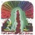
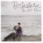
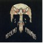
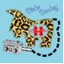

|
|  |
10Shout Out Out Out Out, Not Saying/Just Saying
“A taut structure of dance, Krautrock, disco and punk, with the heart to outlast most pan-flashing acts attempting to cling to the same loosely bound skeleton.”
- -CokeMachineGlow Review |
|  |
9Portastatic, Be Still Please
“...this is an album the lucky few who hear it will embrace like an old friend. Like an old friend who keeps getting more interesting as time goes on, who makes some positive changes to an already rock-solid friendship.”
- -All Music Review |
 |
8The Decemberists, The Crane Wife “The songs brim with melodic ideas, but the album never overwhelms, because Meloy doesn't try to pack every minute with words and hooks. The songs tend to be peppy, guitar-driven, and spacious, and as easy as cracking an egg.”
- - The Onion A.V. Club Review |
|
7Brazilian Girls, Talk To La Bomb
“...it has, in one fell swoop, dismissed any doubts about the band’s legitimacy, while offering a nearly solid 12 tracks of sex, rhythms and mystery.”
- -Pop Matters Review |
 |
6Wet Confetti, Laughing Gasping
“For a while, it seemed as though synth-pop had escaped indie rock, as more and more kids jumped on the post-punk/disco wagon. Not Wet Confetti, though.”
- -XLR8R Review |
 |
5Squarepusher, Hello Everything
“Dazzling chord progressions override fiendishly intricate beats as Jenkinson combines the elation of rave with the complexity of jazz.”
- -Guardian UK Review |
 |
4Tara Jane O’Neil, In Circles
“Like the houses in which the album is set, this work is, of course, manmade, but is touched so lightly by the singer’s hand as to sound purely organic, found to occur naturally in the rural American landscape.”
- -Stylus Review |
|  |
3Pit Er Pat, Pyramids
“Pyramids is a superb effort from a promising and still mutating band – one with plenty of time to find a balance between quirk and quality.”
- -Alarm Press Review |
|  |
2Mochipet, Disco Donkey
“From weird techno to insane electronica, the nine tracks and 4 remixes of this "Disco Donkey" are quite a booty shaking experience, and all with a smile.”
- -Ad Noiseam Review |
 |
1The Blow, Paper Television
“...a delightful mix of quirky vocals and catchy electronic beats. Khaela Marichich's vocals are charming in the way of earnest, guileless karaoke – tuneful and deeply felt, but light and amateurish in texture.”
- -Dusted Review |
back to top
|